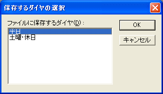

OuDia では、WinDIA形式のファイル(.dia)を読み込むことができます。また、編集したデータを WinDIA 形式のファイルに保存することもできます。
１． メニューコマンド [ファイル]→[開く] を選択してください。
・・・ [ファイルを開く] ダイアログが開きます。
２． [ファイル名] に、 WinDIA 形式のファイルのファイル名を指定して [OK] を押してください。
WinDIA 形式のファイルを読み込む場合、以下の制限があります。
WinDIA では、列車種別毎の列車線の色の設定とは別に、個別の列車に色の設定を行うことができます。 OuDia では、個別の列車に色の設定を行うことはできません。
OuDia は、WinDIA 形式のファイルを読み込むときには、列車ごとの列車線の色の設定を無視します。
１． メニューコマンド [ファイル]→[名前をつけて保存] を選択してください。
・・・ [名前をつけて保存] ダイアログが開きます。
２． [ファイル名] に、拡張子が .dia のファイル名を指定して [OK] を押してください。
データを WinDIA 形式のファイルに保存する場合、以下の制限があります。
OuDia では、１つの路線上に複数のダイヤ（『平日』と『休日』など）を作成することができます。 WinDIA では、１つのダイヤしか作成することができません。
OuDia で複数のダイヤを作成して、そのデータを WinDIA 形式のファイルに保存しようとすると、[保存するダイヤの選択]
ダイアログが開きます。

（図：[保存するダイヤの選択]ダイアログ）
ここで、ファイルに保存するダイヤを１つだけ選択して [OK] を押してください。
OuDia では、列車種別は無制限に（メモリの許す限り）作成することができます。これに対して、
WinDIA では、列車種別の数は２４に制限されています。
２４を超える列車種別を持つ路線データを、 WinDIA 形式のファイルに保存することはできません。
OuDia では、列車種別毎に、『列車線の色』と『文字色』を設定することができます。WinDIAには、列車種別毎の『文字色』の設定はありません。
WinDIA 形式のファイルには、列車種別毎の『文字色』の設定は書き込まれません。
OuDia では、列車種別の『略称』の長さは、半角６文字（全角なら3文字）に制限しています。これに対し、WinDIAでは、『略称』の長さは、半角４文字分（全角２文字）までに制限されています。
半角４文字分以上の略称を持つ列車種別がある場合、そのデータを WinDIA 形式のファイルに保存することはできません。
OuDia では、列車線や文字の色は、Ｒ・Ｇ・Ｂそれぞれに２５６階調を設定できます（ただし、実際に表示可能な色の数は、ディスプレイアダプタによって制限されます）。
WinDIA では、色はあらかじめ決められた１６色からの選択となります。
WinDIA 形式のファイルに保存する際は、列車種別ごとの線の色は、 WinDIA で使用可能な１６色のうち、なるべく近い色を選んで保存します。
OuDia では、[駅]のプロパティとして[境界線]項目がありますが、WinDIA にはありません。
WinDIA 形式のファイルには、この設定は書き込まれません。
OuDia では、列車の[駅時刻]の[駅扱]プロパティの選択肢に[経由なし]があります（時刻表ビューでは
|| が表示されます）。WinDIA には、この選択肢はありません。
OuDiaは、WinDIA 形式のファイルに保存する場合、[経由なし]となっている駅時刻を[通過]に置き換えます。